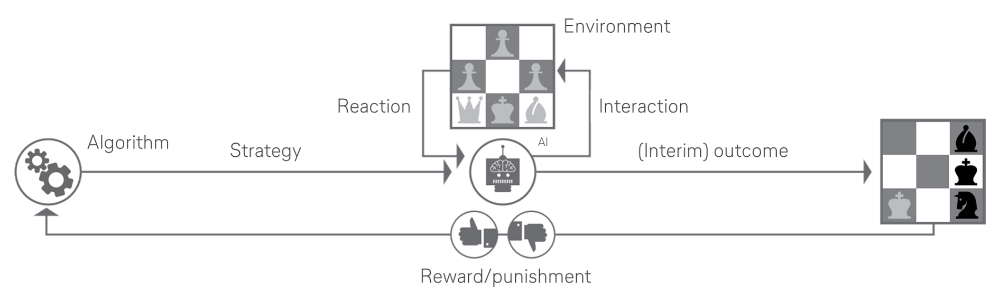

Entscheidungen basierend auf Algorithmen aus dem Bereich des Machine Learnings. Positive und negative Aktionen der Vergangenheit haben Einfluss auf neue Entscheidungen.
Bei der praktischen Anwendung von Deep-learning Algorithmen über theoretische Untersuchungen hinaus scheitert es oftmals an der Datengrundlage. Ein Lernen kann lediglich auf Grundlage von ausreichend Daten erfolgen. Für dieses Problem und vor allem für den Bereich der Logistik kann Simulation als Nachbildung der Realität abbhilfe schaffen. Durch eine Vielzahl an Interationen und Szenarienvergleichen unter Berücksichtung von stochastischen Einflüssen wird diese Lücke geschlossen.
Die Technologie

Businessnutzen
Use Cases
Eingesetzte Tools und Bibliotheken